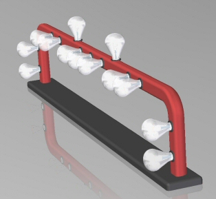
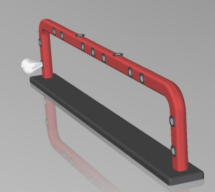
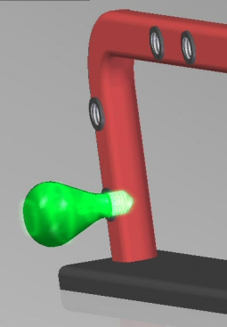
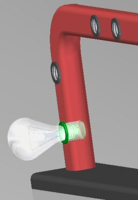
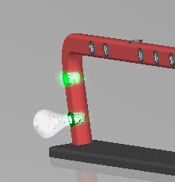
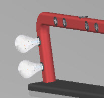
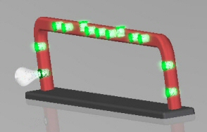
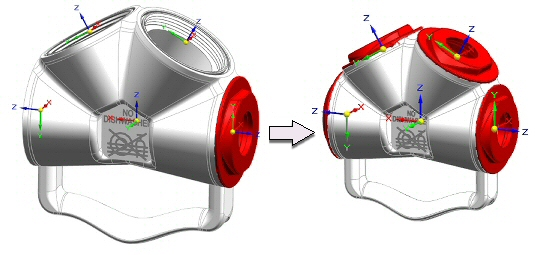

Duplicate Component command
The Duplicate Component command  duplicates one or more assembly components into a duplicate pattern. The orientation of the duplicated part is determined by the relative orientation of the base coordinate system of the selected component to that of the base coordinate system of the target components.
duplicates one or more assembly components into a duplicate pattern. The orientation of the duplicated part is determined by the relative orientation of the base coordinate system of the selected component to that of the base coordinate system of the target components.

Learn how to duplicate components in an assembly by watching the following video.
You can select the following types of components in the active assembly to be duplicated:
Parts
Subassemblies
Pipes
Patterns
Frames
The components are not positioned using assembly relationships. They are positioned using a target component consisting of one of the following component types:
Parts
Subassemblies
Pipes
Patterns
Tubes
Positioning the component to be duplicated.
Before duplicating assembly components, you should properly position one copy of the components you want to duplicate. For example, to pattern a light bulb, use the Place Part command to place the light bulb into one of the sockets in the part.

Selecting the components to be duplicated
After you have positioned the components you want to duplicate, use the Duplicate Component command to select them. The Select Parts step on the Duplicate Component command bar allows you to select the components you want to duplicate. You can duplicate multiple components in one operation.

Defining the from component
In most cases, the from component will be the component that is positioned relative to the selected component to duplicate.

Defining the target component
The target components used for duplicating the assembly component is chosen.

The component is duplicated and positioned relative to the target.

Clicking the All Matching Occurrences button selects all the sockets as targets.

Using coordinate systems and blocks to position duplicated components
You can use coordinate systems to duplicate and position assembly components. To do this, select the coordinate system in the Select From step. The Select To step can then be used to orient the component by matching the coordinate system to a previously created coordinate system. The Select All Matching Occurrences option is not available when using coordinate systems to duplicate components.

Blocks placed in assembly or subassembly sketches can also be used to duplicate components. The orientation of the duplicate component is determined by matching the orientation of the block identified in the Select From step to the orientation of the block selected in the Select To step. Select All Matching Occurrences is valid when placing duplicate components using blocks.
The Clone Component command is similar to the Duplicate Component command. The differences are:
The Duplicate Component command uses a target part or target coordinate system to orient the assembly component, and the resultant placement is grouped as a pattern in Assembly PathFinder. Relationships are not created or used.
The Clone Component command uses existing relationships and target face geometry to place and orient the cloned components. It also recreates those relationships on the clones. Cloned components are placed in Assembly PathFinder as individual components, or they can be placed in an assembly group.
How do I
Build a pattern of parts in an assemblyDrop an assembly pattern
Mirror components in an assembly
Copy and paste assembly components
Learn more
Pattern, mirror, and copy components in assembliesLook up more details
Pattern Parts commandPattern Parts command bar
Pattern Parts command bar
Drop Pattern command
Remove Override Body command
Mirror Components command
Mirror Components command bar (Assembly)
Mirror component options (Assembly)
Pattern Along Curve (assembly)
Related Topics
Along Curve pattern parts command (assembly)Along Curve pattern features command (assembly)